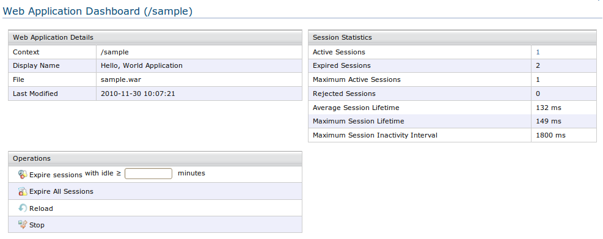

WSO2 AppServer supports Apache Tomcat based web application deployment. Now you can Deploy your custom web application under WSO2 AppServer. All you need to do is to bundle your web application as a '.war' archive with all your web application-related resources and all third party libraries needed, and then deploy the archive.
To deploy the web application, all you have to do is locate the archive file and upload it.
To upload your web archive file, you have to create the '.war' file according to the standard web application format.
The folder structure of the web archive file will be as follows.
HellowWorld.war
index.html
*.jsp
WEB-INF/
web.xml
lib/
classes/
META-INF/
images/
Figure 1: Uploading a web archive file
A successful web application can be easily tested through the user interface. Several options are available to control your web application.

Figure 2: Web Applications List.

Figure 3: Web Application Dashboard.
Note: Instead of using this user interface, you can also manually place the .war containing all the required files into CARBON_HOME/epository/deployment/webapps. These archive files will be deployed as web applications.